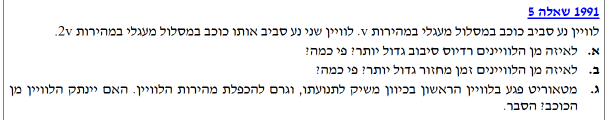

פתרון מודרך, צעד-אחר-צעד

נשרטט תחילה תרשים כוחות (FBD) עבור לוויין גנרי שמסתו \( m \) הנע סביב כוכב במסלול מעגלי. נבחר ציר רדיאלי חיובי לכיוון מרכז הכוכב.
הכוח היחיד הפועל על הלוויין הוא כוח הכבידה של הכוכב ולכן נרשום את משוואת הכוחות לאורך הציר הרדיאלי:
נצמצם ב- \( m \) (מסת הלוויין אינה משפיעה על המסלול) ונצמצם באחד מרדיוסיי ה- \( r \) במכנה, כדי לבודד את רדיוס המסלול \( r \):
כעת, נשתמש בביטוי זה כדי למצוא את הרדיוס של כל אחד מהלוויינים. עבור הלוויין הראשון, שמהירותו \( v_1 = 2v \):
ועבור הלוויין השני, שמהירותו \( v_2 = v \):
כדי למצוא פי כמה הרדיוס גדול, נחשב את היחס ביניהם:
מסקנה: ללוויין השני יש רדיוס סיבוב גדול יותר. רדיוס המסלול של הלוויין השני (\( r_2 \)) גדול פי 4 מרדיוס המסלול של הלוויין הראשון (\( r_1 \)).
נשתמש בחוק קפלר השלישי, המקשר בין זמני המחזור לרדיוסי המסלול של לוויינים הנעים סביב אותו גוף מרכזי:
מסעיף א' אנו יודעים שרדיוס הלוויין השני גדול פי 4 מרדיוס הלוויין הראשון, כלומר יחס הרדיוסים הוא \( \frac{r_1}{r_2} = \frac{1}{4} \). נציב זאת במשוואה:
נחשב את החזקה השלישית באגף ימין:
נוציא שורש ריבועי משני אגפי המשוואה (זמן מחזור הוא גודל חיובי ולכן ניקח את הפתרון החיובי בלבד):
נכפול ב- \( 8T_2 \) את שני האגפים כדי לבודד את \( T_2 \) ונקבל את הקשר הסופי:
מסקנה: ללוויין השני יש זמן מחזור גדול יותר. זמן המחזור של הלוויין השני (\( T_2 \)) גדול פי 8 מזמן המחזור של הלוויין הראשון (\( T_1 \)).
עקרון ניתוק/בריחה: גוף יתנתק משדה כבידה של כוכב ויברח לאינסוף אם האנרגיה המכנית הכוללת שלו מקיימת \( E \ge 0 \).
כדי לבדוק האם הלוויין מנותק נצטרך לחשב את סך האנרגיה המכנית שלו מיד לאחר הפגיעה. ראשית, נמצא ביטוי לאנרגיה הפוטנציאלית הכובדית.
מסעיף א', מתוך השוואת הכוחות בתנועה המעגלית המקורית, קיבלנו את הקשר הבא עבור הלוויין הראשון:
נכפול את שני אגפי המשוואה ב- \( r_1 \) כדי לקבל ביטוי זהה לזה המופיע בנוסחת האנרגיה הפוטנציאלית:
לכן, האנרגיה הפוטנציאלית של הלוויין במרחק זה היא:
כעת, נחשב את האנרגיה הקינטית החדשה לאחר שהמהירות הוכפלה ל- \( 4v \):
נחבר את האנרגיות כדי לקבל את סך האנרגיה המכנית הכוללת החדשה של הלוויין במערכת:
מאחר ו- \( m \) מסה והיא חיובית, ו- \( v^2 \) חיובי, אנו מקבלים שהאנרגיה הכוללת כעת היא חיובית.
מסקנה: מכיוון שהאנרגיה המכנית הכוללת של הלוויין הפכה לחיובית (\( E_{new} > 0 \)), הלוויין אינו קשור יותר שדה הכבידה של הכוכב ולכן כן ינתק מהכוכב ויברח לחלל (למרחק אינסופי).